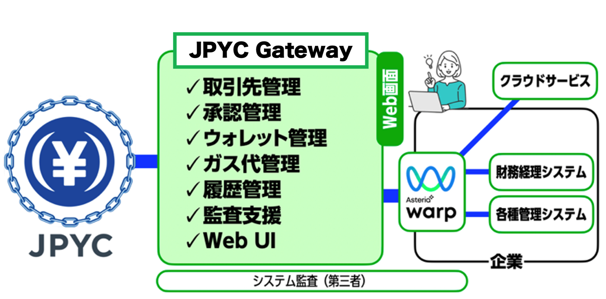

一般的なウォレットだと「PCを持つ担当者一人の判断」で数千万円の送金ができてしまう。会社規定の「申請者 ➔ 承認者」という多段階ワークフローを組めず、内部統制上認められない。
「担当者が退職した」「パスフレーズの紙を紛失した」だけで会社の資金が永久に引き出せなくなる。USB型のハードウェア管理では、物理的な紛失や盗難リスクが高すぎて運用できない。
送金のたびに必要な手数料（ガス代）のために、会社でわざわざ暗号資産（ETH等）を購入・プールしなくてはならず、経理の購入・税務処理フローが既存の日本円会計と噛み合わない。
法人の安心な決済に必要な統制・管理機能をブラウザひとつに集約し、
いつものネットバンキングと同じ操作感を実現しました。
社内規定に合わせた多段階承認や、取引先アドレスのホワイトリスト化で誤送金や不正利用を徹底防御。
煩雑なネイティブトークン（ETHやMATIC等）の保有は不要。ガスレス送金で経理処理をシンプルに。
複雑なWeb3処理を完全隠蔽。24時間365日のリアルタイム決済を、一律格安の手数料で今すぐスタート。
JPYC Gatewayは、経理・財務担当者様が難しい暗号資産の仕様を意識することなく、
安全かつ統制された環境でご利用いただける法人用のステーブルコイン管理システムです。
もう、銀行の窓口や複雑な暗号資産ウォレットに縛られない。
ブロックチェーン決済で最大の障壁となる「ガス代（ETHやMATIC等）」の準備・保有はGatewayがバックエンドで自動代行。経理担当者は、従来の日本円のネットバンキングと全く同じ感覚で、JPYCの送金・管理を行えます。
Web3ウォレットにありがちな「担当者一人の独断による誤送金・不正」を物理的に不可能な仕組みへ。会社規定に合わせた柔軟な申請・承認ワークフローを構築可能。すべての操作ログは改ざん不能な形で記録されます。
経理担当者
¥10,000,000 送金申請
財務責任者（一次承認）
内容の確認・承認待ち
決裁権限者（最終確認）
複数の専用ツールを行き来する必要はありません。
直感的な管理画面で、日々の決済業務を効率化します。
取引先ごとにウォレットアドレスを登録して一元管理。アドレスの複数登録や変更にも柔軟に対応し、手入力による誤送金リスクを排除します。
「申請者」と「承認者」を分け、送金時の多段階承認ルートを設定可能。組織のガバナンス規定に沿った、安全な運用体制を構築できます。
「経理部用」「事業部用」など、用途ごとの自社ウォレットリストを作成・管理。資金を明確に分別管理することで、会計処理をスムーズにします。
暗号資産特有の手数料（ガス代）をGateway側で建て替える「ガスレス送金」に対応。都度の暗号資産購入の手間をなくし、日本円での後払いが可能です。
「いつ・誰に・いくら」送ったか。期間、取引先、ウォレットなどの条件で入出金履歴を瞬時に検索。ブロックチェーン上の記録と照合し、透明性を担保します。
取引履歴やウォレットリストをCSV形式で出力可能。改ざん不可能なデータを元にした信頼性の高い監査証跡として、会計監査にもスムーズに対応できます。
機能のより詳しい詳細やユースケースをまとめた資料をご覧いただけます。
無料で資料請求するJPYC Gatewayは、外部システム連携にも対応しています。
自社環境に合わせた方法で業務自動化を実現いただけます。
貴社のシステム環境に合わせた3つの接続方法
Gatewayの連携口（API）を使わずに、手動で取引履歴をCSV出力。既存の会計ソフトや管理台帳へ手軽にインポートして突合を行いたい方向けの、最もシンプルな方法です。
Gatewayが提供する連携口へ、貴社の自社システムを直接プログラミングして接続。リアルタイムな入金検知に基づいた、独自の高度な自動化を構築できます。
専用のアダプターで100種類以上のシステムとの連携をノーコードで実現できます。高度なシステムの専門知識が無くとも業務の自動化を構築できます。

どこへ、いくら送っても手数料は一律 8 円。
年間で積み重なる数十万〜数百万円の目に見えない損失を完全にストップします。
1回あたりの決済手数料（一律固定）
初期費用 0円 | 基本料金半額キャンペーン実施中！
基本料金に含まれる強固な運用機能
JPYC Gatewayの機能や活用メリットをショート動画で分かりやすくご紹介します。
プラットフォームの全体像と、法人が導入するメリットをサクッと解説！
ガスレス送金や多段階承認ワークフローの実際の挙動をスマホ感覚でチェック。
会計ソフトやERPと連携し、入金消込業務を完全自動化する方法をスマホサイズで解説。